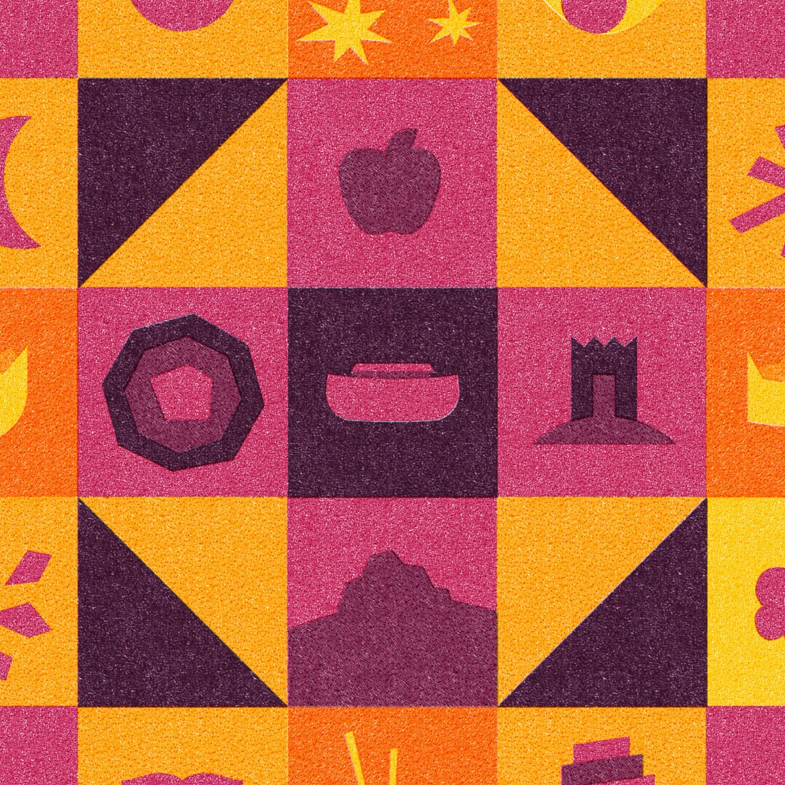

Introdução
Noah to Abraham
Genesis 6-11 Dr. Tim Mackie
Why did God choose to flood the world? There’s much to discover in the story of
Noah and his descendants, as these chapters develop major themes seen throughout
the biblical story. See how the literary design of this movement reveals God’s
character and informs the covenant promises God makes in response to human
rebellion.
Last updated on: December 18, 2025
Table of Contents
Module 1: Introduction to the Flood Narrative
Session 1: How We Read the Flood Story
Session 2: The Flood Story in the Hebrew Bible
Session 3: The Design of Genesis 1-11
Session 4: Reflecting on Genesis 1-11
Session 5: Tale of Two Seeds
Session 6: The Flood Narrative in Ancient Near Eastern Context
Module 2: Cosmic Rebellion in the Time of Noah
Session 7: Design of Genesis 6:1-12
Session 8: The Rebellion of the Sons of Elohim
Session 9: The Identity of the Nephilim
Session 10: Giants in Ancient Near Eastern Context
Module 3: God's Warnings About the Flood
Session 11: The Rebellion of the Sons of Adam
Session 12: Noah the Righteous Remnant
Session 13: The Ark as a Symbolic Eden and Tabernacle
Session 14: Reflecting on the Ark as a Symbolic Eden
Module 4: The Flood
Session 15: The Flood as Cosmic Collapse
Session 16: The Flood Overwhelms the Land
Session 17: The Flood Waters Recede
Session 18: Noah’s Sacrifice and God’s Blessing
Session 19: The Pattern of the High Place Sacrifice
Module 5: After the Flood
Session 20: God’s Covenant With Noah
Session 21: Reflecting on God’s Covenant
Session 22: Noah's Ark and the Flood Debate
Module 6: The Cycle Begins Again
Session 23: God’s Covenant with Noah
Session 24: Reflecting on the Sin of Ham
Session 25: Blessing and Cursing Noah’s Sons
Session 26: The Brothers Come Together in Peace
Session 27: The Founding of Babylon
Session 28: From Shem to Abraham

Module 1: Introduction to the
Flood Narrative
SESSIONS 1-6
Before diving into the story of Noah and the flood, consider the literary and cultural
context that shapes the story’s meaning.
| 1: Session How We Read the Flood Story | |
|---|---|
| Key Takeaways In order to understand what the biblical authors intend to communicate, the literary, cultural, and historic context of Genesis must take precedence over modern questions and concerns. Genesis 1-11 is intricately designed to introduce the themes, vocabulary, and ideas needed to understand the rest of the Hebrew Bible. Jesus and his contemporaries assume the three-part organization of the Hebrew Scriptures called the TaNaK. Reading Ancient Jewish Meditation Literature The TaNaK as a Composite Unity | |
| Sections | Scrolls |
| Torah (The Law) | Genesis, Exodus, Leviticus, Numbers, Deuteronomy |
| Nevi’im (The Prophets) | Former Prophets: Joshua, Judges, Samuel, Kings |
| Latter Prophets: Isaiah, Jeremiah, Ezekiel, Hosea, Joel, Amos, Obadaiah, Jonah, Micah, Nahum, Habakkuk, Zaphaniah, Haggai, Zechariah, Malachi | |
| Ketuvim (The Writings) | Psalms, Job, Proverbs, Ruth, Song of Songs, Ecclesiastes, Lementations, Esther [The Megillot], Daniel, Ezra, Nehemiah, Chronicles |
| Three-Part Collection of the Hebrew Bible. Created by Tim Mackie for BibleProject Classroom: Adam to Noah (2020). | |
| The Hebrew Bible is a set of ancient Israelite scrolls that were formed into an editorial unity over the course of their composition and collection. Their final shape dates to sometime in the 3rd-2nd century B.C.E. They were given a three-part macro design, and this order is preserved in modern Jewish tradition and is well attested in Second Temple Jewish texts and in the New Testament. |
| When Jesus alludes to the order of the Hebrew Bible, he assumes a three-part design, which agrees with other contemporary Jewish authors who also allude to the ordered sections. | ||
|---|---|---|
| Luke 24:44 NIV ... “This is what I told you while I was still with you: Everything must be fulfilled that is written about me in the Torah of Moses, the Prophets, and the Psalms.” | ||
| Luke 11:50-51a NIV 50 Therefore this generation will be held responsible for the blood of all the prophets that has been shed since the beginning of the world, 51 from the blood of Abel to the blood of Zechariah, who was killed between the altar and the sanctuary. Abel was murdered by Cain in Genesis 4, and Zechariah son of Jehoiada was murdered by Joash in 2 Chronicles 24, which corresponds to the TaNaK order. | ||
| “Many great teachings have been given to us through the Law [= Torah], and the Prophets [= Nevi’im], and the others that follow them [= Ketuvim] ... So my grandfather Yeshua devoted himself especially to the reading of the Law and the Prophets and the other scrolls of our Ancestors.” Prologue to The Wisdom of Ben Sirach. | ||
| “The scrolls of Moses, the words of the prophets, and of David.” Dead Sea Scrolls (4QMMT). | ||
| “The laws and the oracles given by inspiration through the prophets and the Psalms, and the other scrolls whereby knowledge and piety are increased and completed.” Philo of Alexandria, De Vita Contemplativa, 25. | ||
| Reflection Question In your experience of reading the flood story, what elements of the story make the least sense to you? What about the narrative challenges you the most? |